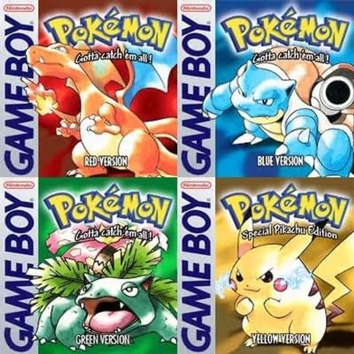

1ª GERAÇÃO: KANTO
A primeira geração foi composta pelos jogos Pokémon Red, Green, Blue e Yellow. Neles, os jogadores exploravam Kanto em busca de se tornar Campeões Pokémon. Foram apresentados os 151 Pokémon originais, incluindo Pikachu, Charmander, Bulbasaur e Squirtle.